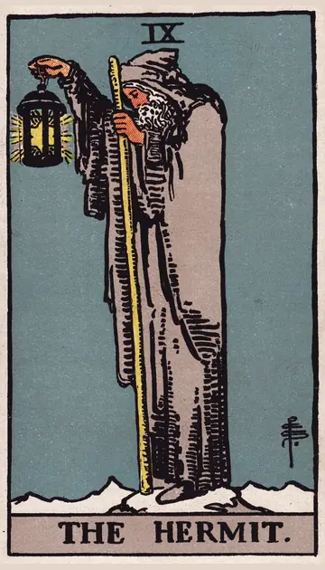

正位置隠者の正位置
キーワード：内省・探求・静かな時間
恋愛
自分の本当の気持ちを見つめ直す時です。
相手の気持ちあなたのことを、静かに大切に思っているようです。
この先自分の気持ちがはっきりして、進む道が見えてきそうです。
アドバイス相手に求めることより、自分が大切にしたいことを考えてみましょう。
気をつけること考え込みすぎて、チャンスを見過ごさないように。
この先自分の気持ちがはっきりして、進む道が見えてきそうです。
アドバイス相手に求めることより、自分が大切にしたいことを考えてみましょう。
気をつけること考え込みすぎて、チャンスを見過ごさないように。
人間関係
少し距離を置いて、関係を見つめ直す時です。
相手の気持ちあなたとの関係を、じっくり考えているようです。
この先本当に大切な人との絆が深まりそうです。
アドバイス大勢より、少人数でじっくり話す時間をとりましょう。
気をつけること一人で抱え込みすぎないように。
この先本当に大切な人との絆が深まりそうです。
アドバイス大勢より、少人数でじっくり話す時間をとりましょう。
気をつけること一人で抱え込みすぎないように。
仕事・学業
一つのことをじっくり深める時期です。
この先深めた知識が、あとで大きな強みになりそうです。
アドバイス専門性を深めることに時間を使いましょう。
気をつけることこだわりすぎて、周りとの足並みを乱さないように。
アドバイス専門性を深めることに時間を使いましょう。
気をつけることこだわりすぎて、周りとの足並みを乱さないように。
お金
お金の使い方を、じっくり見直す時です。
この先見直した分、ゆとりが生まれそうです。
アドバイス本当に必要なものだけに、お金を使いましょう。
気をつけること切り詰めすぎて、必要な出費まで削らないように。
アドバイス本当に必要なものだけに、お金を使いましょう。
気をつけること切り詰めすぎて、必要な出費まで削らないように。
生活
一人の時間を大切にした、静かな暮らしが合う時です。
この先静かな時間が、心を満たしてくれそうです。
アドバイス部屋を整えて、落ち着ける場所をつくりましょう。
気をつけることこもりすぎないよう、外の空気も吸いましょう。
アドバイス部屋を整えて、落ち着ける場所をつくりましょう。
気をつけることこもりすぎないよう、外の空気も吸いましょう。
今日の運勢
一人の時間を大切にすると、心が整う日です。
この先静かな時間の中で、答えが見つかりそうです。
アドバイス読書や散歩など、静かな時間を過ごしましょう。
気をつけること引きこもりすぎて、気分が沈まないように。
アドバイス読書や散歩など、静かな時間を過ごしましょう。
気をつけること引きこもりすぎて、気分が沈まないように。
逆位置隠者の逆位置
キーワード：孤立・閉じこもる・視野の狭さ
恋愛
心を閉ざして、孤独を感じやすい時です。
相手の気持ち自分の気持ちを、表に出せずにいるようです。
この先心を開けば、新しい関係が始まりそうです。
アドバイス少しだけ勇気を出して、自分から連絡してみましょう。
気をつけること過去の恋にとらわれすぎないように。
この先心を開けば、新しい関係が始まりそうです。
アドバイス少しだけ勇気を出して、自分から連絡してみましょう。
気をつけること過去の恋にとらわれすぎないように。
人間関係
周りから浮いているように感じやすい時です。
相手の気持ちあなたとの関係に、少し距離を感じているようです。
この先誰かとの会話が、孤独感を和らげてくれそうです。
アドバイス誰かに話を聞いてもらいましょう。
気をつけること心を閉ざしすぎて、差し伸べられた手を見逃さないように。
この先誰かとの会話が、孤独感を和らげてくれそうです。
アドバイス誰かに話を聞いてもらいましょう。
気をつけること心を閉ざしすぎて、差し伸べられた手を見逃さないように。
仕事・学業
視野が狭くなり、行き詰まりやすい時期です。
この先助言を受け入れれば、突破口が見えてきそうです。
アドバイス周りの意見を取り入れて、視野を広げましょう。
気をつけること自分のやり方にこだわりすぎないように。
アドバイス周りの意見を取り入れて、視野を広げましょう。
気をつけること自分のやり方にこだわりすぎないように。
お金
お金のことを、一人で抱え込みやすい時です。
この先相談することで、道が見えてきそうです。
アドバイス信頼できる人に、相談してみましょう。
気をつけること不安から、極端な節約をしないように。
アドバイス信頼できる人に、相談してみましょう。
気をつけること不安から、極端な節約をしないように。
生活
閉じこもりがちで、生活が単調になりやすい時です。
この先外に出ることで、気分が晴れそうです。
アドバイス散歩など、外に出る時間をつくりましょう。
気をつけること一人で悩みを抱え込まないように。
アドバイス散歩など、外に出る時間をつくりましょう。
気をつけること一人で悩みを抱え込まないように。
今日の運勢
考えがまとまらず、もやもやしやすい日です。
この先誰かと話すことで、もやもやが晴れそうです。
アドバイス外に出て、日の光を浴びてみましょう。
気をつけること一人で悩み続けないように。
アドバイス外に出て、日の光を浴びてみましょう。
気をつけること一人で悩み続けないように。
このページの文章は、アプリ「ひとやすみタロット」の結果に使っている文章です。アプリでは、あなたの相談や、カードが出た位置（今の状況・これからの流れ・アドバイス）に合わせて、この中から文章を選びます。逆位置の読み方は逆位置のことをご覧ください。